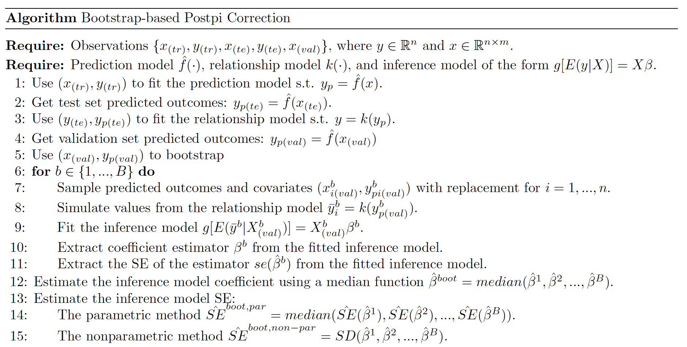
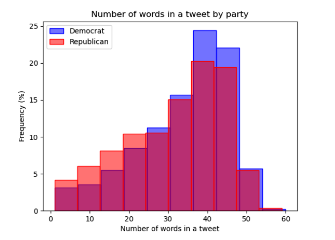

Introduction
Machine learning is a modern task in data science that uses observed data
values to model and predict data. It takes advantage of having observed data
available, but what should be done when observed data cannot be obtained? A
common practice is to use predicted values when observed values are
unavailable, but without any corrections we inevitably run into issues such
as deflated standard errors, bias, and inflated false positive rates.
Wang et al. proposes a method to correct inference done on predicted
outcomes-which they name post-prediction inference, or postpi-in Methods for
correcting inference based on outcomes predicted by machine learning. This
statistical technique takes advantage of the standard structure for machine
learning and uses bootstrapping to correct statistical error using predicted
values in place of observed values.
We are exploring the applicability of Wang et al.'s postpi bootstrapping
technique on political data-that is, on political twitter posts. Our project
will be investigating what kinds of phrases or words in a tweet will strongly
indicate a person's political alignment, in the context of US politics. By
doing so, we can simultaneously test how the bootstrap post-prediction
inference approach interacts with Natural Language Processing models and how
this method can be generally applicable towards analyses in political science.
Methodology
The postpi bootstrap approach by Wang et al. is a method that aims to correct
inference in studies that use predicted outcomes in lieu of observed outcomes.
It is effective due to its simplicity-this approach is not dependent on deriving
the first principles of the prediction model, so we are free to focus on
accuracy without worrying about the impact of the complexity of the model on the
bootstrap approach. The reason why it is not dependent is because this approach
utilizes an easily generalizable and low-dimensional relationship between
observed and predicted outcomes.
An implementation of this algorithm is provided below:

Data
Data Collection and Cleaning
We collected our data by scraping tweets from US politicians from Twitter.
Specifically, we took the Twitter handles of the President, Vice President, and all
the members of US Congress except Representatives Chris Smith (R-NJ) and Jefferson
Van Drew (R-NJ), as they have both deleted their Twitter accounts. These Twitter
handles were compiled and provided by the
UCSD library, and
outdated names or Twitter handles were updated manually by ourselves. Additionally,
the two Independent members of Congress-Senators Bernie Sanders (I-VT) and Angus King
(I-ME)-will be considered Democratic politicians for our purposes, as they caucus with
Democrats.
To prepare our data for prediction and feature selection, we cleaned the tweets by
expanding all contractions, converted all text into lowercase format, and removed urls,
punctuation, and unicode characters. Additionally, we also removed stopwords like
‘the’, ‘an’, ‘are’, etc. using the dictionary of stopwords provided by the NLTK package.
Exploratory Data Analysis
Our data consists of a relatively equal number of tweets leaning either Democratic or Republican. As said earlier, with Independent politicians counting as Democrats, the table below is a brief overview of our data.
| Democrats | 22,850 |
| Republicans | 21,478 |
| Total | 44,328 |
Taking a deeper dive into the data, we look at the distribution of tweet lengths for
either party. Figure 1 is an overlaid histogram plotting the number of words in tweets
from Democrats and Republicans. While both histograms are clearly skewed to the left, we
can see that the distribution of the length of tweets for Democrats has a higher peak than
the distribution for Republicans. This tells us that tweets from Democrats average more
words compared to their counterparts on the opposite aisle.
This could imply that the prediction model will utilize more vocabulary from
Democrat-classified tweets than Republican, which might have interesting effects on the
prediction model and thus the bootstrap algorithm and inference.

We take a deeper dive into each party in Figure 2 below, which lists the 10 most frequent
words used by Democrats and Republicans, excluding stopwords. There are very few
commonalities between either party–only two words are commonly used by both parties:
‘today’ and ‘year’.
Democrats seem to focus on policy issues as suggested by ‘act’ and ‘infrastructure’, but
otherwise their attentions are spread across a multitude of topics as no single unifying
issue seems to be able to group together their most frequently used words. On the other
hand, Republicans seem to focus more on their political opponents–words such as ‘biden’,
‘democrats’, and ‘president’ seem to suggest that–and on the American people. There is
notably a significant reference to ‘biden’, with the President’s name being used
approximately 3500 times, almost double the frequency of the second most popular word.
As such, Figure 2 shows us that Republican-classified tweets may revolve more strongly
around certain themes, such as their opponents, compared to Democrat-classified tweets.
Again, this may influence the prediction model and in turn the inference conducted on our
features.
Methods
Prediction and Relationship Model
During this stage of our project, we worked on maximizing the accuracy of our prediction
model. We compared several different prediction models in the process of coming up with
our final model, trying other classification algorithms such as logistic regression and
ridge regression (regularized).
In the end, we used a TF-IDF vectorization model with 200,000 features and 1-3 words per
feature, and an SVC model for prediction, with a linear kernel and C=1.5. For the
relationship model that takes in the predicted and observed outcomes, we used a K-NN model.
Feature Selectiom for Inference
We reviewed relevant literature in political science to develop a criteria for choosing our
features.
In Twitter Language Use Reflects Psychological Differences between Democrats and Republicans,
Sylwester and Pulver discuss the differences between Democrats and Republicans in the context
of previous findings and their own discoveries. For example, Haidt’s Moral Foundations model,
which identifies “harm, fairness, liberty, ingroup, authority, and purity” as the pillars of
morality, has been used to distinguish between liberals and conservatives. It was found that
liberals prioritized the harm and fairness aspects of morality, while conservatives focused more
on liberty, ingroup, authority, and purity. Sylwester and Pulver also found differences between
Democratic and Republican-aligned people when it came to what kinds of topics they discussed and
emotions they expressed–Republicans focused more on topics such as “religion…, national
identity…, government and law…, and their opponents” while Democrats were focused on emphasizing
their uniqueness and generally expressed more anxiety and emotion.
We also reviewed Chen et al.’s study, #Election2020: the first public Twitter dataset on the 2020
US Presidential election. Chen et al. found that more conservative Twitter users tended to share
more topics related to conspiracy theories and “public health and voting misinformation” compared
to liberal Twitter users.
Taking these two sources into consideration, our criteria for selecting features was whether or
not they would fall into either liberal or conservative tendencies as discovered by either source.
If a feature implied a discussion of harm or fairness, or was an expression of uniqueness, anxiety,
or emotion, then we anticipated that this feature would connect more to Democratic-aligned tweets.
On the other hand, if a feature discussed liberty, purity, religion, national identity, government
and law, or Republican opponents, or implied that the topic at hand was associated with public
health or voting misinformation, said feature may be connected to Republican-aligned tweets.
We ended up selecting 5 features to conduct inference:
| border | illegals | god | defund | love |
We hypothesized that the first three would be strong indicators for a Republican-classified tweet as they allude to national identity and religion, while the last two would indicate a Democratic-classified tweet as they allude to concepts of harm and fairness, as well as emotion.